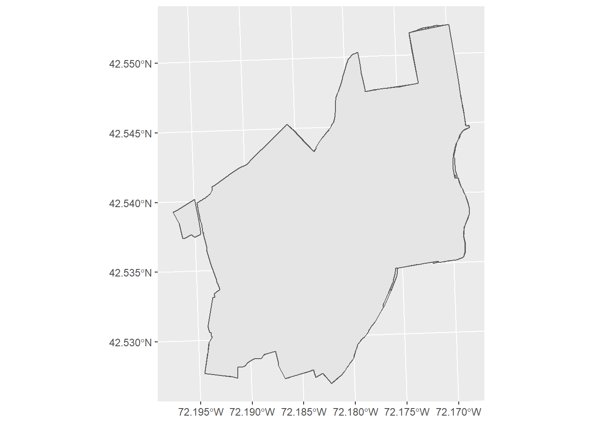

5 Reading in Vector Data
We will use the R package sf for handling vector data. You will have to download and install this package from the CRAN repository (review section 4.10 of the MUN Biology R manual if need a reminder of how to do this).
library(sf)To plot the data (i.e., make a map) we will also need the package ggplot2, so make sure to load and install that as well.
library(ggplot2)Download the folder “HARV” to your working directory. If you do not remember how to check, and set your working directory, review section 4.2. This folder contains data from the Harvard Research Forest. The vector data include a point file that represents sampling points, a line file that is the boundary of the resarch forest, and two polygon files that show the boundary of the research forest and the soil regions.
We read these files in in a similar way as you read in a file like a csv file, but instead of using read.csv we use st_read()
Read in the boundary shapefile (recognizable by the .shp extension) for the Harvard forest
HARV_boundary <- st_read("HARV/harv_boundary.shp")## Reading layer `harv_boundary' from data source `C:\Users\ywiersma\Documents\BIOL4651\GIS_R_manual\ConservationGIS\HARV\harv_boundary.shp' using driver `ESRI Shapefile'
## Simple feature collection with 1 feature and 8 fields
## geometry type: MULTIPOLYGON
## dimension: XY
## bbox: xmin: 730167.7 ymin: 4712097 xmax: 732532.1 ymax: 4714961
## projected CRS: WGS 84 / UTM zone 18NRead in the the soil region shapefile for the Harvard forest
HARV_soils <- st_read("HARV/harv_soils.shp")## Reading layer `harv_soils' from data source `C:\Users\ywiersma\Documents\BIOL4651\GIS_R_manual\ConservationGIS\HARV\harv_soils.shp' using driver `ESRI Shapefile'
## Simple feature collection with 246 features and 5 fields
## geometry type: POLYGON
## dimension: XY
## bbox: xmin: 730421.1 ymin: 4712096 xmax: 732532.4 ymax: 4714961
## projected CRS: WGS 84 / UTM zone 18NTo create a map we will use the ggplot() function, with the geom_sf function.
ggplot() +
geom_sf(data = HARV_boundary) +
geom_sf(data = HARV_soils)
GIS maps are all about “layers” of data. The order in which data are displayed in ggplot is important. In the above code, we “layered” the HARV_soils polygon over the HARV_boundary polygon. Check what happens when we layer them in the opposite order:
ggplot() +
geom_sf(data = HARV_soils) +
geom_sf(data = HARV_boundary)
Now the boundary file is over top the soils one and because it is a filled polygon, we can’t see the soils layer. One way we can deal with this, is by adjusting the transparency of the boundary layer with the alpha function. This adjusts the transparency from fully transparent (alpha = 0), to fully opaque (alpha = 1).
ggplot() +
geom_sf(data = HARV_soils) +
geom_sf(data = HARV_boundary, alpha = 0.1)
We can also symbolize data based on the attributes. Before we do that, let’s explore the HARV_soils layer. If you type HARV_soils At the > prompt, you will see the metadata. You will see that in addition to some descriptions of the geographic reference system (for more on that, see the chapter 7), you will see some attributes, including different kinds of soil classification and drainage types. If we want to display the soil polygons by their SIMMONS_SO field, we would use the aes (for aesthetics) function.
ggplot() +
geom_sf(data = HARV_soils, mapping = aes(fill = SIMMONS_SO)) +
geom_sf(data = HARV_boundary, alpha = 0.1)
The default colour scheme has been applied. You can change this using different built in colour maps. Below is the code to use the viridis colour map.
ggplot() +
geom_sf(data = HARV_soils, mapping = aes(fill = SIMMONS_SO)) +
geom_sf(data = HARV_boundary, alpha = 0.1) +
scale_fill_viridis_d()
To see other aesthetics that can be modified, run vignette("ggplot2-specs")